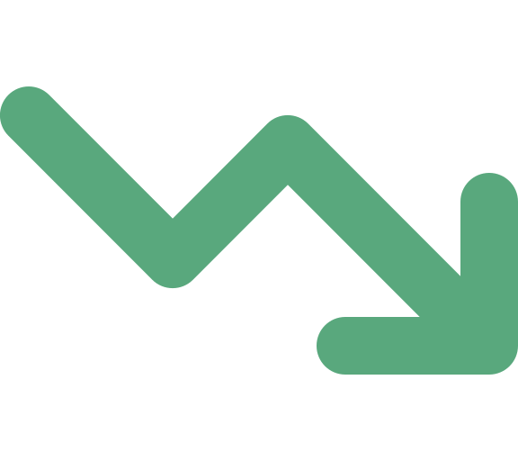

Portada
Arquitectura de Software
Semana 11 — Antipatrones de Arquitectura de Software
Universidad de Antioquia · Ingeniería de Sistemas · 2554608 · 2026-2

Apertura
45 minutos.
440 millones de dólares.
Knight Capital Group, 1 de agosto de 2012 — lo que costó dejar código muerto sin borrar en un servidor de producción.

Transición
Una cifra así no sale de la nada
Detrás de esos 45 minutos hay una historia concreta: una firma de trading de alta frecuencia, un despliegue de software que salió mal, y una decisión arquitectónica tomada años antes que nadie se atrevió a revertir.
Antes de nombrar el problema con teoría, vean cómo se ve en la práctica — con todo el detalle técnico del incidente.
Caso · Ficha técnica
Knight Capital Group, 2012
| Empresa | Knight Capital Group — firma de trading de alta frecuencia en Wall Street |
|---|---|
| Fecha | 1 de agosto de 2012, apertura del mercado |
| Duración del incidente | Aproximadamente 45 minutos |
| Pérdida | Cerca de 440 millones de dólares |
| Consecuencia | Casi quiebra de la empresa; fue adquirida poco después del incidente |
| Fuente | Informe de la SEC (U.S. Securities and Exchange Commission), 2013, sobre el incidente |
Uno de los incidentes de software más citados en la industria financiera como ejemplo de deuda arquitectónica materializada.
Caso · Qué pasó técnicamente
Un despliegue que no llegó igual a los ocho servidores
Knight Capital operaba su motor de trading automatizado en ocho servidores de producción. Para el día del incidente, el equipo desplegó una actualización de software destinada a reemplazar una funcionalidad antigua y ya en desuso.
- El despliegue de la nueva versión no se aplicó de forma uniforme: siete servidores recibieron el código actualizado correctamente, pero uno de los ocho conservó código antiguo que debía haber sido retirado años atrás.
- Ese código legado reutilizaba una bandera (flag) que en el sistema nuevo tenía un significado distinto al que tuvo originalmente.
- Al activarse esa bandera en producción, el servidor con el código viejo interpretó las órdenes de forma errática.
Caso · La causa raíz
Código muerto que nadie se atrevió a borrar
El servidor con el código antiguo comenzó a ejecutar, de forma automática y sin supervisión, millones de órdenes de compra y venta erráticas en decenas de acciones distintas, moviendo el precio de mercado de esos títulos de forma anómala.
El equipo de Knight Capital tardó en identificar que el problema venía de un solo servidor con una versión distinta del software — y, crucialmente, no existía un mecanismo para detener el sistema de forma inmediata una vez detectado el comportamiento anómalo.
El código nunca debió seguir ahí: era funcionalidad obsoleta que se dejó "por si acaso", y ese "por si acaso" costó cientos de millones de dólares.
Caso · Consecuencia
De la casi quiebra a la adquisición
En 45 minutos, Knight Capital acumuló una posición de mercado tan grande y desfavorable que la pérdida resultante puso en riesgo la supervivencia misma de la firma. La empresa necesitó una inyección de capital de emergencia para seguir operando, y meses después fue adquirida por otra firma.
La SEC investigó el caso formalmente y publicó un informe en 2013, que hoy es la referencia pública más citada sobre este incidente — y uno de los ejemplos favoritos de la industria para hablar de riesgo operacional causado por software.
Transición
De la anécdota a la disciplina que la explica
Lo que le pasó a Knight Capital no fue mala suerte: fue la consecuencia visible de decisiones arquitectónicas que, en su momento, parecieron razonables — dejar código antiguo "por si se necesita después", desplegar sin garantizar consistencia entre servidores, no invertir en un mecanismo de parada de emergencia.
Ese tipo de decisión, que parece razonable pero termina siendo contraproducente, tiene nombre en la disciplina: antipatrón. Hoy cerramos la Unidad 2 estudiando la cara opuesta de todo lo que han visto: los errores arquitectónicos que se repiten con la frecuencia suficiente como para documentarlos y reconocerlos.
Concepto
¿Qué es un antipatrón?
Un antipatrón es una solución que parece razonable frente a un problema recurrente, pero que en la práctica resulta contraproducente y genera más problemas de los que resuelve.
| Patrón | Antipatrón | |
|---|---|---|
| Naturaleza | Buena práctica probada, que sí funciona en la práctica | Error común, que parece funcionar pero termina fallando |
| Propósito de documentarlo | Reutilizar una solución que ya demostró funcionar | Reconocer un error antes de repetirlo, o corregirlo a tiempo |
| Ejemplo de hoy | Circuit Breaker (Semana 9) | Código muerto reactivado en Knight Capital |
No es lo mismo que un simple "error de programación": un antipatrón es una decisión de diseño o arquitectura que se repite lo suficiente entre proyectos distintos como para merecer nombre y catálogo propio.
Concepto · Origen del término
De dónde viene la palabra "antipatrón"
| Hito | Detalle |
|---|---|
| Primer uso registrado | Andrew Koenig, en un artículo de 1995, usó por primera vez el término "anti-pattern" en la literatura de software. |
| Obra que lo popularizó | "AntiPatterns: Refactoring Software, Architectures, and Projects in Crisis" (1998), de William J. Brown, Raphael C. Malveau, Hays W. "Skip" McCormick III y Thomas J. Mowbray. |
| Qué propuso el libro | Un catálogo formal de antipatrones de software, arquitectura y gestión de proyectos, con la misma estructura de documentación que ya usaban los catálogos de patrones (contexto, problema, solución errónea, refactorización recomendada). |
El término nace como espejo del movimiento de patrones de diseño (Gang of Four, 1994): si un patrón documenta una buena práctica, un antipatrón documenta un error frecuente para poder evitarlo.
Transición
El antipatrón arquitectónico más citado
De todo el catálogo que abrieron Koenig y luego Brown, Malveau, McCormick y Mowbray, hay uno que se convirtió en el ejemplo por excelencia cuando se habla de arquitectura de software: describe exactamente lo que le puede pasar a cualquier sistema que crece sin que nadie vigile su estructura.
Concepto
"Big Ball of Mud" (Bola de Lodo)
Un sistema sin una arquitectura discernible: código pegado con parches sucesivos, sin capas claras ni separación de responsabilidades — funciona, pero nadie entiende bien por qué, y nadie puede modificarlo con confianza.
- No es un sistema roto: normalmente funciona en producción y cumple su propósito.
- El problema es estructural: cualquier cambio, por pequeño que sea, puede tener efectos impredecibles en otra parte del sistema.
- Suele originarse por presión de tiempo constante, rotación de equipo y ausencia de revisión arquitectónica — cada decisión individual parecía razonable en su momento.
Concepto · Ficha técnica
Foote y Yoder, 1997
| Autores | Brian Foote y Joseph Yoder |
|---|---|
| Año | 1997 |
| Documento | Paper "Big Ball of Mud" |
| Presentado en | PLoP (Pattern Languages of Programs) — la conferencia de referencia de la comunidad de patrones de software |
| Aporte | Formalizar y nombrar un fenómeno que ya era ampliamente reconocido informalmente en la industria, dándole la misma estructura de documentación que un patrón "bueno" |
Que el "Big Ball of Mud" se haya presentado en PLoP, el foro académico de los patrones de diseño, subraya la idea central de la sesión: antipatrones y patrones se documentan con el mismo rigor, solo que uno enseña qué hacer y el otro qué evitar.
Contraejemplo · De vuelta al caso
Los antipatrones detrás de Knight Capital
El incidente de Knight Capital no fue un solo error: fue la combinación de varios antipatrones reconocibles.
- Lava Flow (código muerto no eliminado): código legado que "ya no se usa" pero que nadie se atreve a borrar por miedo a romper algo — hasta que se reactiva por accidente, como ocurrió con la bandera reutilizada.
- Despliegue no atómico/consistente: actualizar siete de ocho servidores y dejar uno con una versión distinta rompe una garantía básica de cualquier sistema distribuido: todos los nodos deben quedar en el mismo estado tras un despliegue.
- Ausencia de "kill switch": no existía un mecanismo para detener el sistema de forma inmediata una vez detectado el comportamiento anómalo, lo que permitió que el error se acumulara durante 45 minutos completos.
Concepto · Conexión con lo ya visto
Lo que sí pudo haber ayudado: Circuit Breaker
En la Semana 9 vieron Circuit Breaker, el patrón del catálogo POSA que detecta comportamiento anómalo en un componente y corta la comunicación con él antes de que el fallo se propague en cascada al resto del sistema.
Ese es exactamente el tipo de mecanismo que le faltó a Knight Capital: un punto de control capaz de detectar que el volumen y patrón de órdenes eran anómalos y detener automáticamente el envío de nuevas órdenes, en vez de dejar que el sistema siguiera operando sin freno durante 45 minutos.
Un patrón bien aplicado no es solo "buena práctica" en abstracto: en este caso concreto, hubiera evitado la mayor parte de la pérdida.
Concepto · Catálogo compacto
Otros antipatrones comunes
| Antipatrón | Qué es |
|---|---|
| Golden Hammer | Usar la misma solución o tecnología para todo problema, sin evaluar si es la adecuada — "si solo tienes un martillo, todo parece un clavo". |
| Vendor Lock-in | Dependencia tan profunda de un proveedor específico (nube, base de datos propietaria) que migrar a otro se vuelve prohibitivamente costoso. |
| God Object / God Class | Una clase o componente que concentra demasiadas responsabilidades, conociendo y controlando casi todo el sistema. |
| Spaghetti Code | Código con flujo de control enredado, sin estructura clara, difícil de seguir o modificar. |
God Object viola directamente el Principio de Responsabilidad Única (SRP) de SOLID, visto en la Semana 10: una clase debería tener una sola razón para cambiar, no todas las razones del sistema a la vez.
Tensión conceptual
Lo que hoy es antipatrón, ayer fue una decisión razonable
Es tentador leer un antipatrón como "alguien hizo algo obviamente mal". Casi nunca es así: la bandera reutilizada de Knight Capital tuvo sentido cuando se escribió; el código que hoy es un Big Ball of Mud empezó como un sistema pequeño y comprensible.
La deuda técnica no siempre es un error — muchas veces es una decisión consciente y razonable dada la información y el contexto del momento (una fecha límite, un alcance más pequeño, una tecnología que luego cambió) que se volvió insostenible con el tiempo.
Lo que distingue a un equipo maduro no es no generar nunca deuda técnica, sino reconocerla, hacerla visible y pagarla antes de que se convierta en un antipatrón activo.

Interacción
Encuentren un antipatrón en su propio proyecto
En equipos, revisen su proyecto de CodeF@ctory y respondan:
- ¿Identifican algún antipatrón de los vistos hoy (Big Ball of Mud, Lava Flow, Golden Hammer, Vendor Lock-in, God Object, Spaghetti Code) presente, aunque sea parcialmente, en su proyecto?
- ¿Fue una decisión consciente en su momento, o simplemente creció sin que nadie lo decidiera?
- ¿Qué patrón arquitectónico ya visto en el curso podría mitigarlo?
5 minutos · respondan en voz alta o en el chat
Síntesis
Ideas clave de hoy
- Un antipatrón es una solución que parece razonable a un problema recurrente pero resulta contraproducente; documentarlo permite reconocerlo y evitarlo, igual que un patrón documenta una buena práctica.
- El término lo usó por primera vez Andrew Koenig (1995) y lo popularizó el libro AntiPatterns de Brown, Malveau, McCormick y Mowbray (1998).
- Big Ball of Mud (Foote y Yoder, PLoP, 1997) es el antipatrón arquitectónico más citado: un sistema sin arquitectura discernible.
- Knight Capital (2012, pérdida de ~440 millones de dólares en 45 minutos) mostró en la práctica tres antipatrones combinados: código muerto no eliminado (Lava Flow), despliegue no atómico, y ausencia de un mecanismo de parada de emergencia — algo que un Circuit Breaker (Semana 9) pudo haber mitigado.
- Lo que hoy es antipatrón muchas veces fue una decisión razonable ayer: la deuda técnica no siempre es un error, es un riesgo que hay que gestionar activamente.
Síntesis · Cierre de la Unidad 2
Doce sesiones, una sola unidad: Patrones Arquitectónicos
Con esta sesión cerramos la Unidad 2 completa, doce sesiones desde la Semana 6 hasta hoy:
- Catálogo POSA (Semanas 6 a 9) — quince patrones puntuales: Pipes & Filters, Blackboard, Broker, MVC, Batch, Cliente/Servidor N-capas, Layers, Microkernel, SOA, Hexagonal, Microservicios, WebHooks, BFF, Circuit Breaker y SOFEA.
- Estilos Arquitectónicos (Semana 9) — la taxonomía de Shaw y Garlan que organiza esos quince patrones en cinco grandes familias.
- Principios de Diseño (Semana 10) — SOLID, DRY, KISS y YAGNI, las reglas que deberían gobernar cada decisión dentro de un estilo.
- Arquitecturas Modernas (Semana 10) — JAMStack, WebAssembly, WebSockets, gRPC, micro-frontends y las tendencias que redefinen cómo se implementan esos estilos hoy.
- Antipatrones (hoy) — la cara opuesta de todo lo anterior: lo que pasa cuando esas decisiones se toman mal, o se dejan de revisar.
Todo lo que han visto en esta unidad — patrones, estilos, principios, arquitecturas modernas — existe, en el fondo, para evitar terminar como Knight Capital.
Cierre
Para la próxima semana
- Repasar los antipatrones vistos hoy y confirmar que pueden explicar, con sus propias palabras, por qué cada uno "parece razonable" antes de volverse un problema.
- Tener identificado, con su equipo de CodeF@ctory, al menos un antipatrón presente en su proyecto y cómo lo abordarían.
La Semana 12 abre la Unidad 3 — Desarrollo de Software basado en Arquitectura — con Desarrollo basado en Componentes.